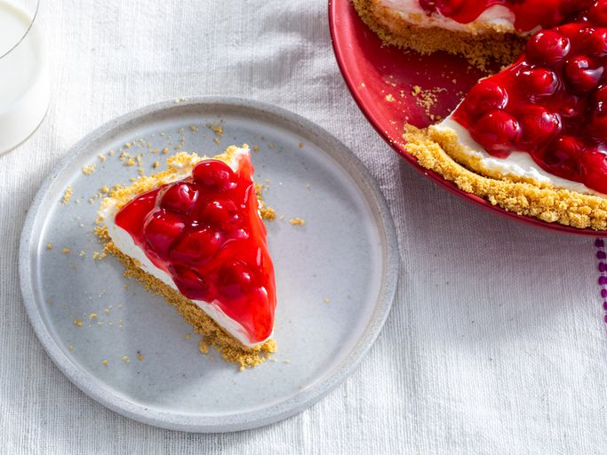

No Bake Cheesecake

Description
This no-bake cherry cheesecake has a graham cracker crust and a light and creamy filling. Top with a can of cherry pie filling for a deliciously easy dessert.
Ingredients
Steps
- To make the crust: Mix graham cracker crumbs, butter, and sugar in a bowl until well incorporated and crumbly. Press mixture into a 9-inch pie plate, going up the sides as much as possible.
Source
Home